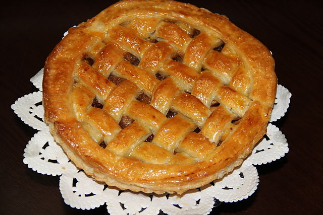

Apple Pie

About Apple Pie
This is a very simple tasty recepe for apple pie. While some people like theirs with cinnamon or other spices added in, I like mine plain. Apples all the way!
Ingredients
Crust:
- 110g plain flour
- 50g cooking margarine
- Pinch of salt
Filling:
- Cooking apples
- Sugar (to taste)
Steps
For the crust:
- Crumble the margarine into the flour and salt.
- Add a small splash of water, to bind all together.
- Let the pastry rest for half an hour in the fridge.
For the filling:
- Peel and chop the apples into a deep pan.
- Add sugar to taste.
- Put the lid on the pan, light the stove and keep the mix at a slow simmer.
- Cook until the apples are falling apart and there is a nice sauce.
- Let the mix cool down before putting the pie together.
Putting it all together:
- Roll out almost two thirds of the pastry to the size of the tin.
- Chop off the edges of the pastry, leaving a little space to join the lid.
- Add the apple sauce.
- Roll out the rest of the pastry to make the lid. If you are artistic, make patterns!
- Put the lid over the rest of the pie and crimp the edges of the pastry together.
- If there are no holes in the pastry, cut two small slits in to the top of the pastry, to let the steam out.
- Cook in the oven at a medium temperature, til the pastry is light brown and crunchy.
And there you have it! One lovely simple apple pie to share with friends and family.